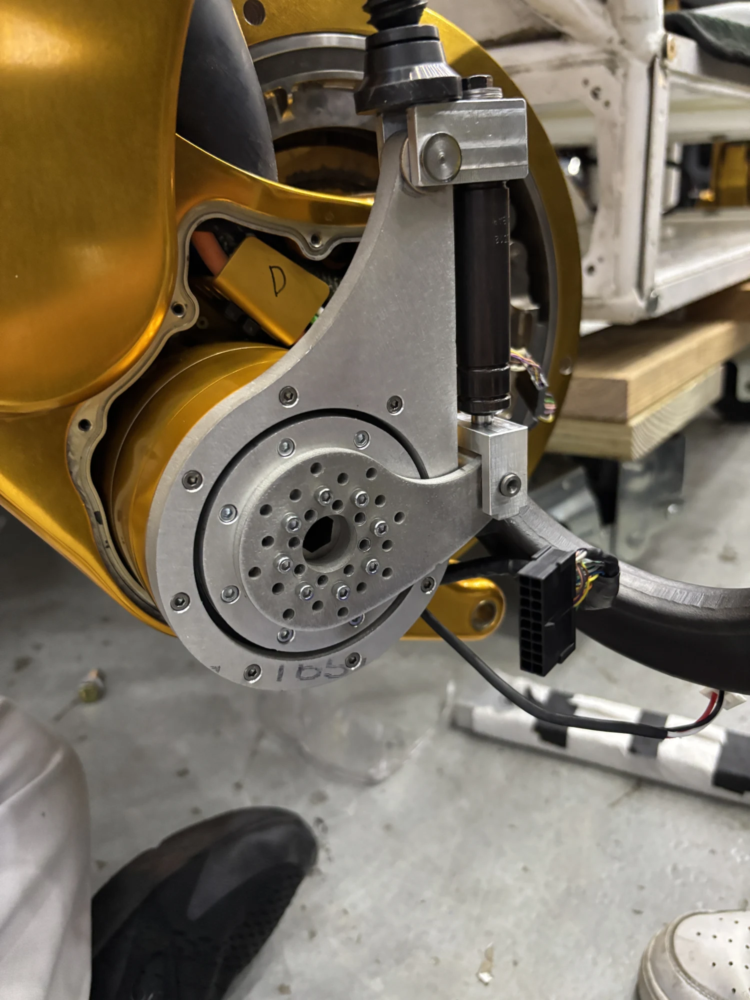
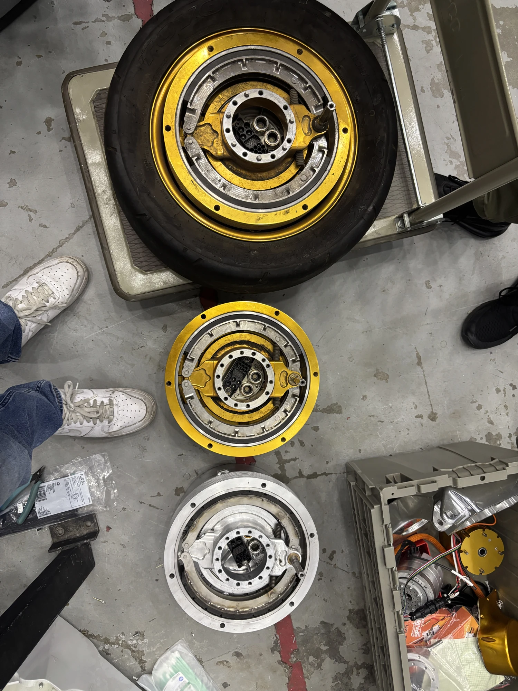

Brake design and sizing
Project overview
A brake prototype for NASA’s Modular Robotic Vehicle using a 220 lbf gas shock.
Modeling and design
I used Desmos to model the vehicle’s braking-force requirements, accounting for load transfer during braking to determine the required braking force at each motor.
I modeled and iterated the assembly in SolidWorks, checked packaging, and used FEA to evaluate load capacity.


Manufacturing and testing
Prototype manufacturing
I created GD&T drawings for in-house and outsourced parts and machined a prototype using a manual lathe and mills with digital readouts, meeting ±0.002 in positional tolerance requirements.
Test result
Testing measured a braking torque of 420 ft·lbf at the motor, 5% above the design target. The additional torque likely came from the mechanical advantage of the drum brake shoes and internal friction.
Prototype validation supported resumption of MRV rebuild efforts.

